Modeling Current Signal From an Energizing Transformer
In this case study, we analyze the current signal from the R-phase when a 400 kV three-phase transformer is energized. The measurements were performed by Sydkraft AB in Sweden.
We describe the use of function ar for modeling the current signal. A non-parametric analysis of the signal is first performed. Tools for choosing a reasonable model order are then discussed, along with the use of ar for signal modeling. Methods for fitting a model to only a chosen range of harmonics are also discussed.
Contents
Introduction
System Identification Toolbox™ offers tools for describing the dynamic characteristics of a signal. Signals can be considered as the impulse response of an autoregressive linear model, and can thus be modeled using tools such as ar.
Data for signals can be encapsulated into iddata objects, by setting the output data of the object to the signal values, and leaving the input empty. For example, if x(t) represents a signal to be modeled, then the corresponding iddata object can be created as: data = iddata(x,[],T);, where T is the sampling interval of x.
Standard identification tools, such as n4sid, pem, ar and arx may be used to estimate the characteristics of the "output-only" data. These models are assessed for their spectral estimation capability, as well as their ability to predict the future values of the signal from a measurement of their past values.
Analyzing Data
We begin this case study by loading the data for the current signal from the transformer:
load current.mat
Now, we package the current data (i4r) into an iddata object. The sampling interval is 0.001 s (1 ms).
i4r = iddata(i4r,[],0.001) % Second argument empty for no input
Time domain data set with 601 samples.
Sampling interval: 0.001
Outputs Unit (if specified)
y1
Let us now analyze this data. First, take a look at the data:
plot(i4r)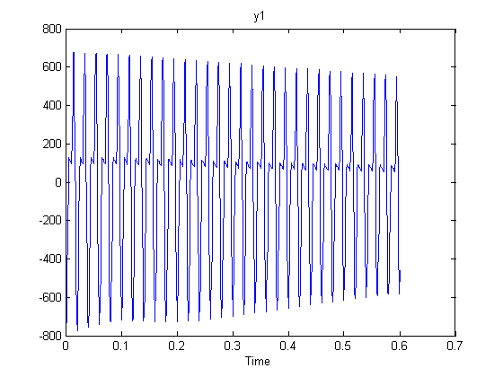
A close up view of the data is shown below:
plot(i4r(201:250))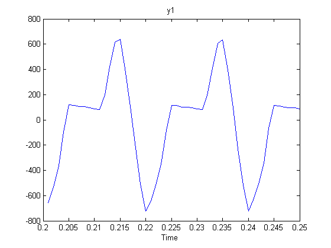
Next, we compute the raw periodogram of the signal:
ge = etfe(i4r) bode(ge)
IDFRD model ge. Contains SpectrumData for 1 signal at 128 frequency points, ranging from 24.544 rad/s to 3141.6 rad/s. Output Channels: y1 Sampling time: 0.001 Estimated from data set i4r using ETFE.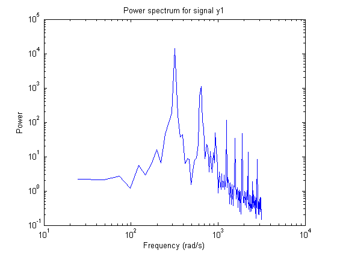
This periodogram reveals several harmonics, but is not very smooth. A smoothed periodogram is obtained by:
ges = etfe(i4r,size(i4r,1)/4);
bode(ge,ges); legend({'ge (no smoothing)','ges (with smoothing)'})
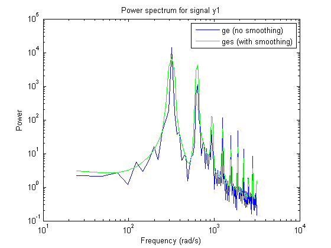 A plot with linear frequency scale is given by:
ffplot(ges), grid on, legend('ges')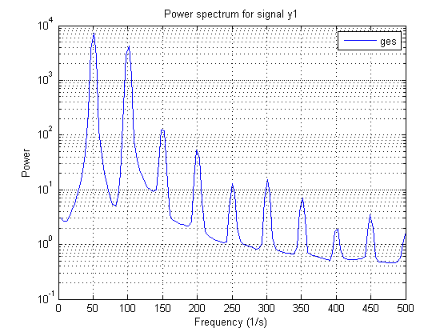
We clearly see the dominant frequency component of 50 Hz, and its harmonics.
Let us perform a spectral analysis of the data using spa, which uses a Hann window to compute the spectral amplitudes (as opposed to etfe which just computes the raw periodogram). The standard estimate (with the default window % size, which is not adjusted to resonant spectra) gives:
gs = spa(i4r);
ffplot(gs,ges), legend({'gs (using spa)','ges (using etfe)'})
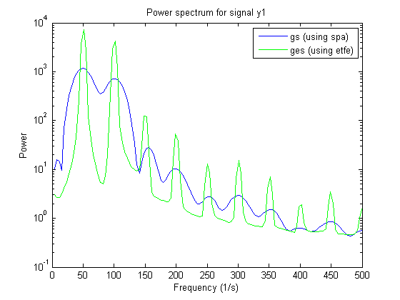 We see that a very large lag window will be required to see all the fine resonances of the signal. Standard spectral analysis does not work well. We need a more sophisticated model, such as those provided by parametric autoregressive modeling techniques.
Parametric Modeling of the Current Signal
Let us now compute the spectra by parametric AR-methods. Models of 2nd 4th and 8th order are obtained by:
t2 = ar(i4r,2); t4 = ar(i4r,4); t8 = ar(i4r,8);
Let us take a look at their spectra:
ffplot(t2,t4,t8,ges)
legend({'t2 (2nd order AR)','t4 (4th order AR)','t8 (8th order AR)','ges (using spa)'});
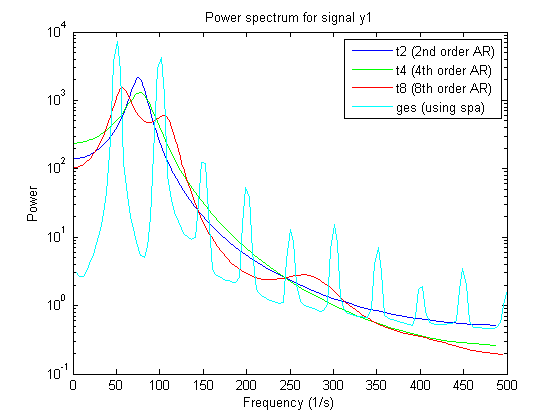 We see that the parametric spectra are not capable of picking up the harmonics. The reason is that the AR-models attach too much attention to the higher frequencies, which are difficult to model. (See Ljung (1999) Example 8.5).
We will have to go to high order models before the harmonics are picked up.
What will a useful order be? We can use arxstruc to determine that.
V = arxstruc(i4r(1:301),i4r(302:601),[1:30]'); % Checking all order up to 30
Execute the following command to select the best order interactively: nn = selstruc(V,'log');
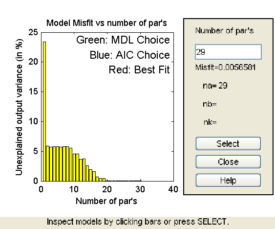
As the figure above shows, there is a dramatic drop for n=20. So let us pick that order for the following discussions.
t20 = ar(i4r,20);
ffplot(ges,t20); legend({'ges (using spa)','t20 (20th order AR)'});
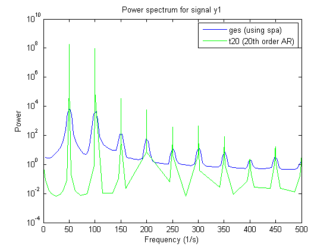 All the harmonics are now picked up, but why has the level dropped? The reason is that t20 contains very thin but high peaks. With the crude grid of frequency points in t20 we simply don't see the true levels of the peaks. We can illustrate this as follows:
g20c = idfrd(t20,[551:650]/600*150*2*pi); % A frequency region around 150 Hz ffplot(ges,t20,g20c), legend({'ges (using spa)','t20 (20th order AR)','g20c (resp. around 150 Hz)'});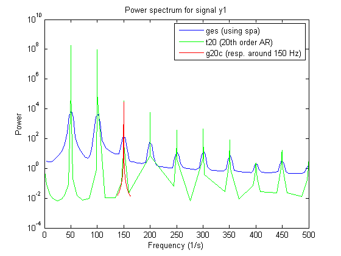
As this plot reveals, the model t20 is fairly accurate; when plotted on a fine frequency grid, it does capture the harmonics of the signal quite accurately.
Modeling Only the Lower-Order Harmonics
If we are primarily interested in the lower harmonics, and want to use lower order models we will have to apply prefiltering of the data. We select a 5th order Butterworth filter with cut-off frequency at 155 Hz. (This should cover the 50, 100 and 150 Hz modes):
i4rf = idfilt(i4r,5,155/500); % 500 Hz is the Nyquist frequency
t8f = ar(i4rf,8);
Let us now compare the spectrum obtained from the filtered data (8th order model) with that for unfiltered data (8th order) and with the periodogram:
ffplot(t8f,t8,ges)
legend({'t8f (8th order AR, filtered data)','t8 (8th order AR, unfiltered data)','ges (using spa)'});
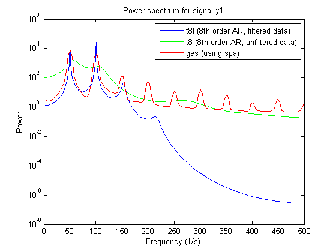 We see that with the filtered data we pick up the first three peaks in the spectrum quite well.
We can compute the numerical values of the resonances as follows: The roots of a sampled sinusoid of frequency, say om, are located on the unit circle at exp(i*om*T), T being the sampling interval. We thus proceed as follows:
a = t8f.a % The AR-polynomial omT = angle(roots(a))' freqs = omT/0.001/2/pi'; % show only the positive frequencies for clarity: freqs1 = freqs(freqs>0) % In Hz
a =
Columns 1 through 7
1.0000 -5.0312 12.7031 -20.6934 23.7632 -19.6987 11.5651
Columns 8 through 9
-4.4222 0.8619
omT =
Columns 1 through 7
1.3591 -1.3591 0.9620 -0.9620 0.3146 -0.3146 0.6314
Column 8
-0.6314
freqs1 =
216.3063 153.1036 50.0665 100.4967
We thus find the first three harmonics (50, 100 and 150 Hz) quite well.
We could also test how well the model t8f is capable of predicting the signal, say 100 ms (100 steps) ahead, and evaluate the fit on samples 201 to 500:
compare(i4rf,t8f,100,'samples',201:500);
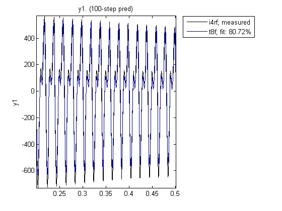 As observed, a model of the first 3 harmonics is pretty good at predicting the future output values, even 100 steps ahead.
Modeling Only the Higher-Order Harmonics
If we were interested in only the fourth and fifth harmonics (around 200 and 250 Hz) we would proceed by band-filtering the data to this higher frequency range:
i4rff = idfilt(i4r,5,[185 275]/500);
t8fhigh = ar(i4rff,8);
ffplot(ges,t8fhigh), legend({'ges (using spa)','t8fhigh (8th order AR, filtered to high freq. range)'});
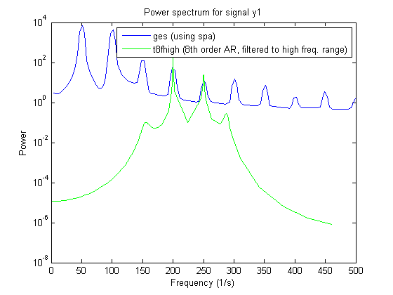 We thus got a good model in t8fhigh for describing the 4th and 5th harmonics. We thus see that with proper prefiltering, low order parametric models can be built that give good descriptions of the signal over the desired frequency ranges.
Conclusions
Which model is the best? In general, a higher order model would give a higher fidelity. To analyze this, we consider what the 20th order model would give in terms of its capability in estimating harmonics:
a = t20.a % The AR-polynomial omT = angle(roots(a))' freqs = omT/0.001/2/pi'; % show only the positive frequencies for clarity: freqs1 = freqs(freqs>0) %In Hz
a =
Columns 1 through 7
1.0000 0.0034 0.0132 0.0012 0.0252 0.0059 0.0095
Columns 8 through 14
0.0038 0.0166 0.0026 0.0197 -0.0013 0.0143 0.0145
Columns 15 through 21
0.0021 0.0241 -0.0119 0.0150 0.0246 -0.0221 -0.9663
omT =
Columns 1 through 7
0 0.3146 -0.3146 0.6290 -0.6290 0.9425 -0.9425
Columns 8 through 14
1.2559 -1.2559 1.5726 -1.5726 1.8879 -1.8879 2.2027
Columns 15 through 20
-2.2027 2.5136 -2.5136 3.1416 2.8240 -2.8240
freqs1 =
Columns 1 through 7
50.0639 100.1139 149.9964 199.8891 250.2858 300.4738 350.5739
Columns 8 through 10
400.0586 500.0000 449.4611
We see that this model picks up the harmonics very well. This model will predict 100 steps ahead as follows:
compare(i4r,t20,100,'samples',201:500);
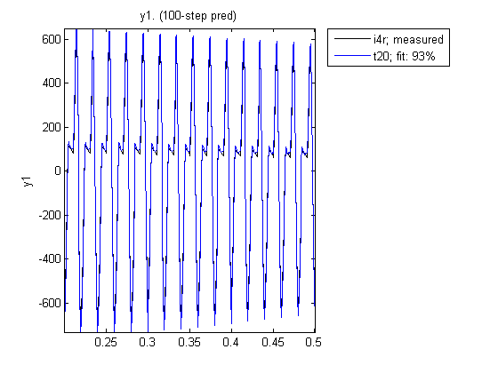 We now have a 93% fit with t20, as opposed to 80% for t8f.
We thus conclude that for a complete model of the signal, t20 is the natural choice, both in terms of capturing the harmonics as well as in its prediction capabilities. For models in certain frequency ranges we can however do very well with lower order models, but we then have to prefilter the data accordingly.
Additional Information
For more information on identification of dynamic systems with System Identification Toolbox visit the System Identification Toolbox product information page.